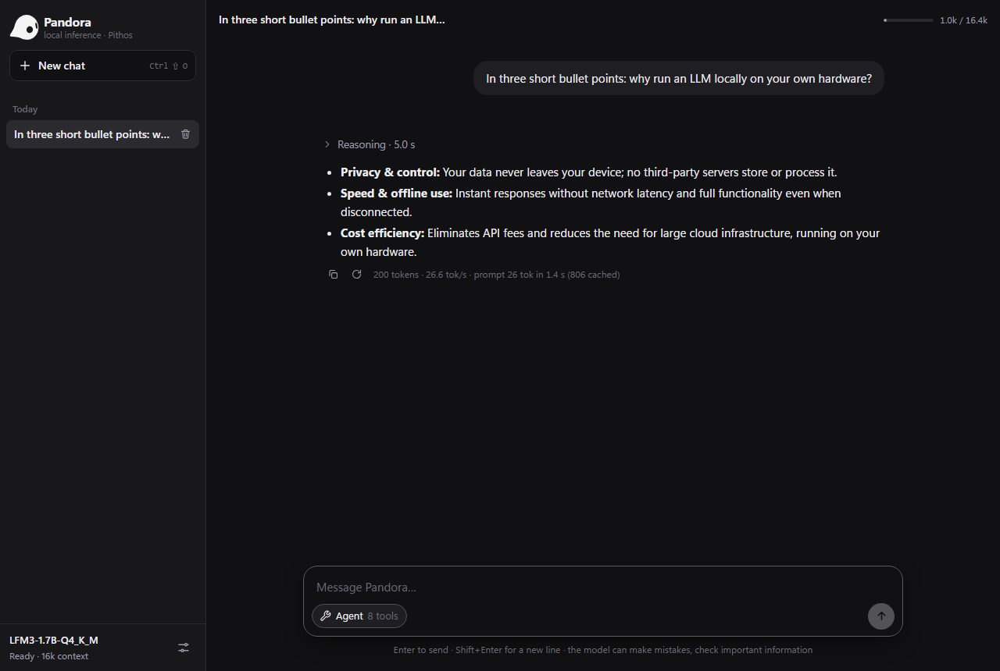

A teraflop, asleep in the living room.
Millions of Xbox One consoles sit under televisions, switched off most of the day, waiting to be replaced. Inside each one: eight CPU cores, 8 GB of memory and a GPU that still delivers more than a trillion operations per second.
Small language models have become good enough to be useful. LFM3-1.7B, by Liquid AI, reasons, follows instructions and calls tools in 1.1 GB. So the question was simple: can a console from the last decade become the house's private AI server, with no cloud and no new hardware?
- CPU
- 8 × AMD Jaguar, 1.75 GHz. AVX, but no AVX2 and no FMA.
- GPU
- AMD GCN. Measured: 1.36–1.46 TFLOPS, 47–49 GB/s.
- Memory
- 8 GB shared with the system. An ordinary app gets little of it; a game gets about 5 GB.
- Software
- Developer Mode: signed UWP packages, installed over the network.
A CPU too old for the fast path.
Pithos computes with hand-written AVX2 kernels: integer dot products on 256-bit registers, straight on the quantized weights. The Jaguar cores stop at AVX, with 128-bit integer operations. On the console Pithos would have fallen back to plain C.
So it got a third set of kernels, quant_avx.c: the same integer arithmetic in 128-bit pieces, without fused multiply-add. They are chosen at runtime, so they also help any PC without AVX2, such as Intel Ivy Bridge. Every kernel is checked against the reference on real model weights, and perplexity matches the AVX2 path (4.460 vs 4.454).
First result, CPU only: 7.3 tokens per second. It worked, and it was slow.
Living inside an app.
An Xbox runs apps in a sandbox. There is no command line, no child processes, and only the app variants of the file APIs. The engine had to become a UWP package: the same C code compiled with PITHOS_UWP, inside a small C++ shell that waits for a model, starts the server on the local network and draws a screen for the TV.
Everything happens from a PC through the console's Device Portal: deploy.py installs the package, uploads the 1.1 GB model into the app's folder, starts it and reads its log. The TV shows the state, the addresses to connect to, the log, and a chat you can use with the gamepad.
Game mode opens the GPU.
As an ordinary app, the console offers Direct3D 11 at feature level 10.1: no compute shaders worth using. A small probe built into the app found the door. Set the app type to Game in Dev Home, and the same package gets 5 GB of RAM and Direct3D 12 with shader model 5.1. The probe then measured 1.36 TFLOPS and 49 GB/s.
There is no OpenCL on Xbox, and Pithos's GPU code was OpenCL. So we wrote a new backend: Direct3D 12, driven from plain C, with d3d12.dll loaded at runtime and shaders compiled ahead of time to bytecode the console understands.
From the CPU to the GPU, one step at a time.
Each step moved more of the work to the GPU and was measured on the console, in Game mode, with LFM3-1.7B Q4_K_M.
- Start
CPU only, 6 threads
The baseline in Game mode, where 6 threads leave room for the system.
- Step 1
Prompt matmuls on the GPU
Q4_K and Q6_K weights copied once into GPU memory; tiles of 64 rows × 64 tokens.
- Step 2
Decoding on the GPU too
Matrix-vector kernels with integer dot products, like the CPU kernels, and the 128,000-token output layer.
- Step 3
The whole token in one command list
Norms, RoPE, attention, convolution and SwiGLU on the GPU, with its own KV cache. About 100 submissions per token became one, and only the logits come back.
- Step 4
The whole prompt too
Chunks of 64 tokens in a single pass: a causal convolution over the chunk and attention with a running softmax.
In App mode the CPU, with all 8 threads, reached 7.3 and 17.6. Game mode trades two cores for the GPU and 5 GB of memory. Prompt speed falls to 121 tokens per second at 1,000 tokens, and generation to 26 after 1,000 tokens of context, because attention grows with the context.
Three bugs worth remembering.
The compiler that miscounted
One matrix kernel gave wrong results for some weight scales. A C emulation of the shader and the compiler's disassembly showed that fxc mishandled a computed byte index. Reading the scales as 16-bit halves fixed it.
The branch that never ran, and hung the GPU
The compiler flattens branches, so a load inside an if that never runs is still executed. With no bounds checks on raw buffers, an address built from a "no weight" marker froze the device. Now every address stays valid, taken or not.
Noise is not an error
Activations are rounded to 8 bits, and any change in summation order flips a few roundings that grow token after token. Even the CPU kernels differ in this way. So the GPU is validated on real text: the probability of each next word matches the CPU (2.678 vs 2.692 on average).
An AI server for the whole house.
The console now serves Pandora, the Pithos web chat, to any browser on the network, and the same OpenAI-compatible API any application can use. Conversations are saved on the console and resume where they stopped, even after a restart.

What you get
- Web chat at
http://CONSOLE-IP:8080for every device in the house - OpenAI-compatible API at
/v1, with streaming and tool calls - A chat on the TV, used with the gamepad
- Agent mode with file tools, calculator and date
- Prompt reuse saved on the console
Honest limits
- Tested on an Xbox One S with LFM3-1.7B; the 24B model does not fit
- Game mode must be set again after every reinstall
- No shell commands, MCP servers or web search inside the sandbox
- Needs Developer Mode and a PC to build and install
The console made the PC faster too.
The Direct3D 12 backend also works on Windows PCs. On the reference laptop (GTX 1650), --no-gpu --d3d12 runs LFM3-1.7B at 330 tokens per second on the prompt and 69 on generation, against 67–103 and 56 with OpenCL. The AVX kernels give older PCs without AVX2 a fast CPU path. Nothing changed for the default path on Windows and Linux: the same tokens, at the same speed.